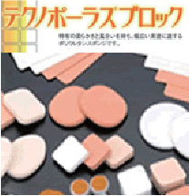

テクノポーラスブロックは、弊社独自の特殊な製造技術に基づく均一でかつ高い気孔率（低い見掛け比重)を特長とする連続微細気孔のポリウレタンスポンジであります。
その固有な柔らかさと風合いから、化粧用パフ、アイシャドウチップ、皮膚への薬液塗布スポンジなどに多く使われますが、ハイテク分野にあっても、対象物を傷つけない／吸水・吸油量が大きい／自己発塵性がないことを活かし、ワイパー、クッションシート、スペーサー、プリンタのインクタンク等幅広い用途にご利用いただけます。
テクノポーラスブロックの見掛け比重、伸長率、硬度、気孔径等の一般物性は、ご用途に応じて制御することができ、ご指定の形状、サイズにスライス・打ち抜き加工いたします。

●一般物性
| SOFT ↔ HARD | ||||
|---|---|---|---|---|
| 見掛密度 (g/㎝3) | 0.13 | 0.12 | 0.15 | 0.16 |
| 気孔率(%) | 88 | 89 | 86 | 85 |
| 平均気孔径 (μm) | 200 | 250 | 200 | 100 |
| 引張強度 (N/㎝2) | 22 | 15 | 19 | 21 |
| 伸長率 (%) | 330 | 320 | 360 | 250 |
| 硬度 (ASKER F) | 35 | 40 | 50 | 55 |
| 色 | クリーム色 | 黒色 |
|---|---|---|
| 見掛密度 (g/㎝3) | 0.15 | 0.19 |
| 気孔率(%) | 86 | 83 |
| 平均気孔径 (μm) | 250 | 250 |
| 引張強度 (N/㎝2) | 22 | 24 |
| 伸長率 (%) | 320 | 400 |
| 硬度 (ASKER F) | 56 | 56 |
| SOFT ↔ HARD | ||||
|---|---|---|---|---|
| 見掛密度 (g/㎝3) | 0.13 | 0.16 | 0.21 | 0.22 |
| 気孔率(%) | 88 | 85 | 81 | 80 |
| 平均気孔径 (μm) | 300 | 250 | 150 | 400 |
| 引張強度 (N/㎝2) | 22 | 50 | 170 | 78 |
| 伸長率 (%) | 330 | 300 | 260 | 170 |
| 硬度 (ASKER F) | 75 | 88 | 88 | 88 |
| 用途例 | 精密部品 クッションワイパー |
塗布用途 | 塗布用途 | 鎮痛剤ヘッドラバー |
硬度は厚み8mm、環境温度25℃の値
上表物性値は例示であり、ご要望に従い調整することができます。
●標準サイズ
630mm(L)x280mm(W)x24mm(H)
厚み ： 最小厚み1～1.5mmまでスライス加工できます。
●パンフレットのダウンロード
●テクノポーラス CVX（凹凸加工）を開発
ご用途に応じて、様々な加工が可能です。CVXローラーやCVXシートはハードディスク、ウェハーの洗浄に使われております。

テクノポーラス CVXシート

螺旋溝切り加工